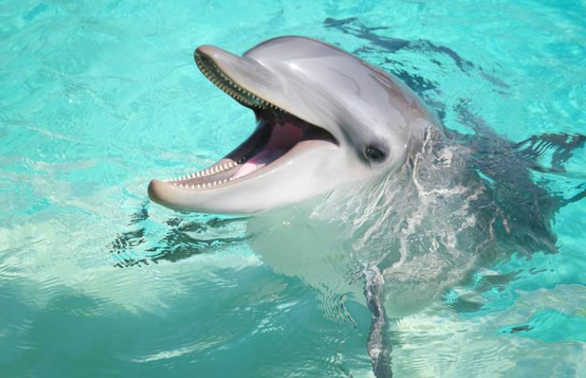

You can find these facts, and much more here!
In the scene where Marlin has to go through jellyfish, Marlin was okay because he is a Ocellaris clownfish. This type of clownfish lives in sea aneonmes. Jellyfish are in the same phylum as sea anenomes. The layer of mucus on a clownfish that protects it from sea anenomes could have protected Marlin from the jellyfish!
This information was found on thisInsider article.